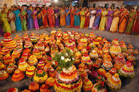
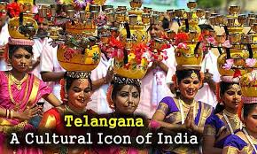
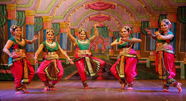

Telangana, also spelled Telengana or Telingana, constituent state of south-central India. It is bordered by the states of Maharashtra to the north, Chhattisgarh and Odisha to the northeast, Andhra Pradesh to the southeast and south, and Karnataka to the west. The area of what is now Telangana constituted the north-central and northeastern portions of Andhra Pradesh for almost six decades, but on June 2, 2014, that territory was calved off to form a separate state. The capital of both Telangana and Andhra Pradesh is Hyderabad, in west-central Telangana.
Telangana lies at a crossroads between northern and southern India, and it has a diverse population. In general, the state’s various communities are identified more readily by a combination of language, religion, and social class or caste than they are by specific ethnic affiliation. The Dravidian language Telugu is the official and most widely spoken language in the state. A small minority speaks Urdu, a language primarily of northern India and Pakistan. Most of the remaining groups speak border-area languages, including Hindi, Kannada, and Marathi. Lambadi (Banjari) and other languages are spoken by the state’s Scheduled Tribes (the official designation for indigenous minority peoples). The great majority of Telangana’s residents practice Hinduism, while smaller numbers of the population follow Islam. Some one-fourth of the state’s people are members of Scheduled Castes (the official designation for those formerly called “untouchables”) and Scheduled Tribes.
The cultural hearts of Telangana, Hyderabad and Warangal, are noted for their wealth and renowned historical structures – Charminar, Qutb Shahi Tombs, Paigah Tombs, Falaknuma Palace, Chowmahalla Palace, Warangal Fort, Kakatiya Kala Thoranam, Thousand Pillar Temple and the Bhongir Fort in Yadadri Bhuvanagiri district. The historic city Golconda in Hyderabad established itself as a diamond trading centre and, until the end of the 19th century, the Golconda market was the primary source of the finest and largest diamonds in the world. Thus, the legendary name Golconda Diamonds became synonymous with Golconda itself. The Golconda region has produced some of the world's most famous diamonds, including the colourless Koh-i-Noor (United Kingdom), the blue Hope (United States), the pink Daria-i-Noor (Iran), the white Regent (France), the Dresden Green (Germany), and the colourless Orlov (Russia), Nizam and Jacob (India), as well as the now lost diamonds Florentine Yellow, Akbar Shah and Great Mogul. Religious edifices like the Lakshmi Narasimha Temple in Yadadri Bhuvanagiri district, Makkah Masjid in Hyderabad, and Medak Cathedral are several of its most famous places of worship.



The religious makeup of Telangana is about 85.1% Hindu, 12.7% Muslim, and 1.3% Christian, and 0.9% others
There are religious worship centres of different religions in the state.
Hindu worship destinations include Bhadrachalam Temple, Gnana Saraswati Temple, Yadagirigutta Temple, Ramappa Temple, Vemulawada Raja Rajeswara temple, the Thousand Pillar Temple.
The Muslim worship destinations such as Makkah Masjid near Charminar, Khairtabad Mosque, Koh-e-qaim, Mian Mishk Masjid, Toli Masjid and Spanish Mosque.
Christian worship centres include the Diocese of Dornakal of the Church of South India, Bahe Church of South India, and Medak Cathedral. There are also some Buddhist destinations, such as Nelakondapalli, Dhulikatta, Phanigiri and Kolanpaka.
Telugu
Telugu, one of the classical languages of India, is the official language of Telangana. More than 75 percent of Telanganaite speak in this language. In Telangana, Telangana Telugu, a dialect of Telugu, which is laced with words of Urdu is spoken.
Urdu
Urdu is the second official language of Telangana. It is spoken by more than 12 percent of Telangana people. In Telangana, Hyderabadi Urdu, which is subdialect of Dakhini Urdu is spoken.
Andh
Andh is an unclassified Indo-Aryan language spoken by 100,000 Andhs in India. They are mostly spread in the bordering area of Maharashtra and Telangana.
Gondi
Gondi is the language of the Gondi tribe. In Telangana, there are two dialects of Gondi are spoken Adilabad and Aheri. The Adilabad dialect of Gondi is spoken, mostly in the districts of Adilabad, Karimnagar, and Warangal, whereas Aheri dialect is restricted to Adilabad only.
Kolami
Kolami is a tribal Dravidian language which is mostly spoken in the border area of Maharashtra and Telangana. It is most widely spoken central Dravidian language.
Lambadi Lambadi (or known as Lambani, Banjari, Goola, Gurmarti, Kora, Singali, Sugali, Tanda) is a language of Banjara people. It's regional dialect have influence of Marathi and Hindi in Maharashtra, Kannada in Karnataka, and Telugu in Telangana.
Pardhan
Pardhan is a tribal Dravidian language spoken in Tamil Nadu, Madhya Pradesh, Chhattisgarh, and Maharashtra. In Telangana, it is spoken around the district of Adilabad.
Koya and Yerukula are two tribal languages which belongs to Dravidian language group spoken in parts of Telangana.
Dappu Dance
Dappu Nrityam or Dappu Dance is a reputed dance form in the Telangana. Dappu is known by different names in various parts of the state such as Tapetta and Palaka. This dance form derives its name from the melodiously rhythmic musical instrument ‘Dappu’, which is a percussion instrument (drum) shaped like a tambourine. This dance form is believed to have originated from the Nizamabad district of Telangana. The dance performers wear colorful and bright attires. The dance is usually performed at many festive occasions.
Lambadi
Lambadi is an ancient folk dance of Telangana (and Andhra Pradesh), which is performed by the semi-nomadic tribes called ‘Lambadis’ or ‘Banjaras’ or ‘Sengalis’. The dance owes its origin to tribes in Rajasthan. Lambadi dance is usually performed by females and only a rare participation by the males. The dancers were colourful embroidered costumes embellished with glass beads and mirrors and ornate jewellery. The dance involves every-day themes like harvesting, planting and sowing. The dancers use words from Rajasthani, Gujarati, Marathi and Telugu languages. Lambadi is generally a group dance which is performed on various festivals sch as Holi, Dussehra, Deepawali and other such occasions.
Perini Sivatandavam
Perini Sivatandavam or Perini Thandavam is a typical war dance which owes its origins to the 11th century rulers of Kakatiya dynasty. It is dedicated to Lord Shiva (Lord Rudra). Historical insights into the dance form can be found in the thousand pillared temples and shrines at Palampet and Ghanapur in Warangal district. This dance form is performed only by men who dance to the accompaniment of bells, drums and conches.
The credit for the revival of Perini along with other ancient spiritual dances like ‘Agama Nartanams’ and ‘Navajanardana Parijatam’ is attributed to late Dr. Nataraja Ramakrishna (1923-2011).
Gusadi
Gusadi is a folk dance is performed by ‘Raj Gonds’ or the Gondulu tribes in the of Adilabad district of Telangana. The dance is generally performed during the festival of Diwali. The dancers wear colourful costumes decorated with ornaments and move around in the villages in troupes, singing and dancing. Such troupes are called Dandari dance troupes. ‘Gusadi’ is a part of Dandari and consists of two to five
members.